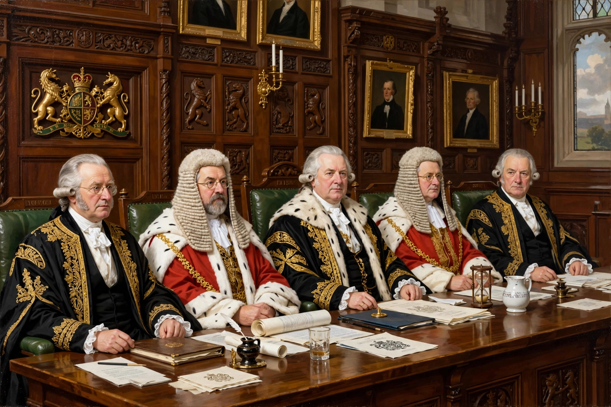

Judicial Committee of the House of Lords
| Judicial Committee of the House of Lords | |
|---|---|
 | |
| Established | 1876 (Appellate Jurisdiction Act) |
| Dissolved | 1 October 2009 |
| Location | Palace of Westminster, London |
| Composition | Lords of Appeal in Ordinary |
| Succeeded by | Supreme Court of the United Kingdom |
The Judicial Committee of the House of Lords was the highest court of appeal for civil and criminal cases in the United Kingdom and for certain Commonwealth countries. It was composed of the Lords of Appeal in Ordinary, commonly known as the Law Lords, who were professional judges appointed to the House of Lords for life under the Appellate Jurisdiction Act 1876.
Although the whole House of Lords was in theory the court, in practice only the Law Lords heard appeals, a convention that developed during the nineteenth century. Judgments were technically given as speeches in the House, with the committee reporting its opinion to the full House for approval.
History
The House of Lords had exercised appellate jurisdiction since the Middle Ages, originally as part of the Curia Regis. During the 19th century, lay peers gradually ceased to participate in appeals; the last vote by a non-lawyer peer on an appeal occurred in 1844. The Appellate Jurisdiction Act 1876, passed under Benjamin Disraeli, created salaried Lords of Appeal in Ordinary, who sat as life peers.
In 1948 the committee moved from the chamber of the House to a committee room, where it sat in ordinary dress rather than judicial robes, reflecting its committee status. Decisions such as Donoghue v Stevenson (1932), which founded the modern law of negligence, were delivered by the committee.
Jurisdiction
The committee heard appeals from the Court of Appeal of England and Wales, the Court of Session in Scotland (civil cases only), and the Court of Appeal in Northern Ireland. It was also the final court for some Commonwealth jurisdictions that had not abolished appeals to it, and it should not be confused with the separate Judicial Committee of the Privy Council, which handled most overseas appeals.
Abolition
The Constitutional Reform Act 2005 transferred the judicial functions of the House of Lords to a new Supreme Court of the United Kingdom, which opened on 1 October 2009. The serving Law Lords became the first Justices of the Supreme Court, and the last judgment of the committee was delivered on 30 July 2009.